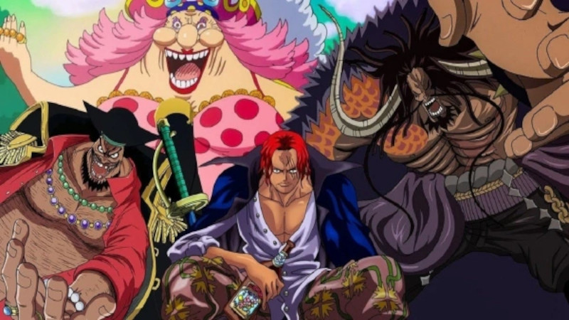
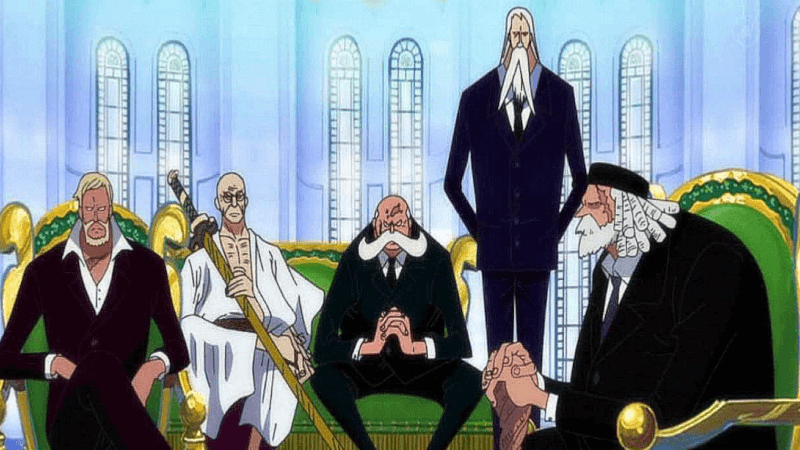

Monkey D. Luffy
Monkey D. Luffy , também conhecido como Luffy Chapéu de Palha ou Chapéu de Palha, é um pirata e o protagonista do anime e mangá One Piece. Ele é o fundador e o capitão do cada vez mais infame e poderoso Piratas do Chapéu de Palha, bem como um de seus principais lutadores.
Chapéus de Palha
Os Piratas do Chapéu de Palha, também conhecidos como a Tripulação do Chapéu de Palha ou simplesmente Chapéus de Palha , liderada por Monkey D. Luffy, são uma tripulação pirata ascendente e infame que se originou do East Blue, mas que possui vários membros de locais diferentes.
Oceanos de One Piece
O continente é chamado de Red Line, a grande cadeia de ilhas é chamado de Grand Line e os quatro mares são chamados de North Blue, South Blue, East Blue e West Blue.
Marinha
A Marinha é um grupo militar, visto estar estabelecida em uma época chamada “A Era dos piratas” é o sistema militar mais poderoso, que segue estritamente as ordens do governo mundial e são antagonistas da série One Piece. Seu Quartel general fica localizado em Marineford.
Shichibukais
Os Shichibukai são uma organização dos sete piratas que viraram corsários a serviço do Governo Mundial. Embora eles trabalhem para o Governo Mundial, muitos Shichibukai não se preocupam e não respeitam o Governo Mundial.
Yonkous

Os piratas mais próximos de conseguir o título de Rei são os Yonkou . Estes são piratas lendários, com tripulações gigantescas, poderosíssimas, que exercem controle e “proteção” a inúmeras ilhas por toda a Grand Line e que podem bater de frente com qualquer força.
Governo Mundial

O Governo mundial é um dos 3 grandes poderes do mundo de One Piece, sendo uma unificação de mais de 170 países de todo o mundo. Os Países membros são autônomos, ou seja, resolvem seus assuntos internos, embora o governo interfira as vezes.
Pior Geração
A Pior Geração é um termo que se refere aos onze piratas Supernovas que chegaram no Arquipélago de Sabaody antes da Batalha de Marineford, juntamente com o Yonkou Barba Negra. Eles são famosos pelas ações ousadas cometidas contra o Governo Mundial e têm recompensas acima de 100,000,000.
Exército Revolucionário
O Exército Revolucionário é uma organização militar poderosa, liderada por Monkey D. Dragon, que se opõe ao Governo Mundial, embora seus verdadeiros alvos sejam os corruptos e depravados Nobres Mundiais de Mary Geoise que controlam o governo mundial para seu próprio benefício.
AKuma no Mi
As Akuma no Mi são a fonte de poder de algumas das pessoas mais fortes da geração atual no mundo, incluindo tripulações de piratas novatos, os Almirantes da Marinha, os Shichibukai, e pelo menos três Yonkou, Barba Negra, Big Mom e Kaidou.
Haki
"Haki " é um poder que está adormecido em todas as criaturas do mundo... "Presença", "Espírito de Luta" e "Intimidação"... Não é diferente dos sentidos humanos... No entanto, a maioria das pessoas não percebem este poder dentro de si, ou talvez... Ao tentar desperta-lo acabam morrendo... "O ato de não duvidar". Isso faz a força!